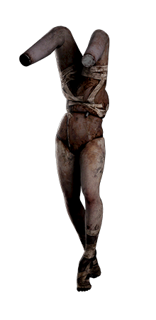
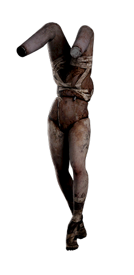

Silent Hill 2 Remake
Tp2-Automne
Jullyssa Senécal-Poitras
Technique d'intégration multimédia
Collège de Maisonneuve
Temps Record pour terminer le jeu
| Classement | Temps | Date | Platforme |
|---|---|---|---|
| 1 | 1h 52m 13s | Novembre 2024 | PC | 2 | 1h 52m 40s | Novembre 2024 | PC | 3 | 2h 00m 18s | Novembre 2024 | PC | 4 | 2h 02m 11s | Octobre 2024 | PC | 5 | 2h 01m 28s | Octobre 2024 | PC |
Mon avis sur le jeu
Critique
Silent Hill 2 Remake est un jeu d'horreur et de survie. Il a été développé par la Bloober Teams et publié par Konami. Ce dernier est un Remake du jeu Silent Hill 2 fait sur playstation 2 en 2001. Ce jeu incroyable plonge les joueurs dans l'angoissante ville de Silent Hill, où James Sunderland part à la recherche de sa femme Mary, décédée depuis quelques années. Il reçoit une lettre étrange l'invitant à la retrouver dans cette ville. Au fil de l'histoire, James rencontre divers personnages énigmatiques du jeu original, affrontant des créatures horrifiques et des visions troublantes. Le jeu conserve les éléments tant aimé des joueurs de l'original tout en profitant des avancées technologiques pour améliorer les graphismes et les mécaniques de jeu.
De mon point de vue, Silent Hill 2 Remake est un chef-d'œuvre qui ravive l’expérience d’horreur psychologique des années 2000. Il permet aussi d'adapter la puissance actuelle des consoles et de créer des nouvelles mécaniques. Ce qui m'a le plus impressionée était ses incroyables graphismes et la bande-son immersive. Je pense que ce remake rend hommage au jeu original tout en apportant des nouveautés.
Silent hill 2 Remake Trailer
Vidéo
Voici le lien vers une petite vidéo youtube. Celle-ci contient la bande d'annonce du jeu Silent hill 2 Remake sur Playstation 5. Je trouve cette dernière très pertinente puisqu'elle nous donne un appercu du jeu et nous met bien dans l'atmosphère de l'univers de silent hill.
 
